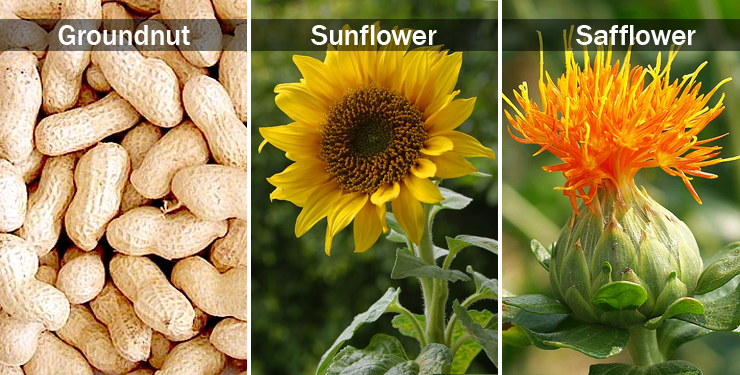

| Home |
| GROUNDNUT |
| SUNFLOWER |
| SAFFLOWER |
PESTS OF OIL SEEDS - GROUNDNUT, SUNFLOWER AND SAFFLOWER
Oilseeds occupy a prominent place among the principal commercial crops grown in India. The important oilseeds cultivated in India are Brassica sp, groundnut, sunflower, safflower, castor, sesame and linseed. These crops are damaged by number of pests, of which mustard aphid, mustard sawfly and the painted bug are the most serious. The aphid is the most serious pest on brassica oilseeds throughout India. On groundnut crop, the white grub has recently assumed serious proportions in Rajasthan, Gujarat, Maharashtra, Karnataka and Uttar Pradesh. The leaf miner and the red hairy caterpillar are the serious in central and southern India. The groundnut aphid is a menace throughout the groundnut growing areas. Its incidence during different years varies with rainfall. Intermittent rains have a depressing effect on the aphid population.
 |
||